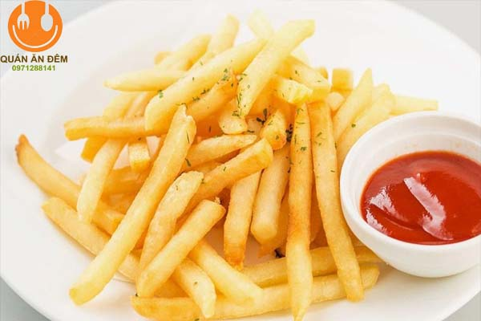
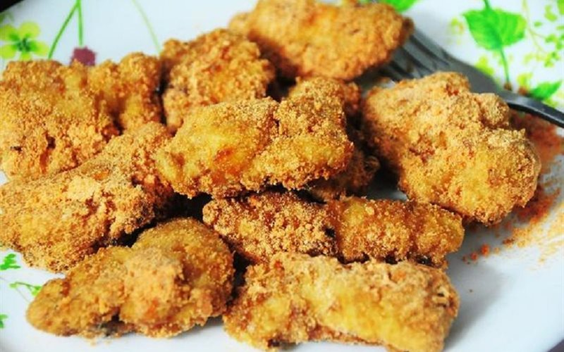

Khoai tây chiên là một món ăn làm từ khoai tây có nguồn gốc xuất xứ từ Bỉ. Món khoai tây chiên phổ biến nhất tại các nước Pháp, Bỉ, Anh, Mỹ, nhưng ngày nay có thể thấy ở khắp nơi trên thế giới.

Khoai tây được gọt vỏ, thái thành lát mỏng dày tùy ý, sau đó ngâm trong nước lạnh đã pha muối khoảng 15 đến 20 phút (ngâm với nước đá lạnh càng tốt) để làm sạch mủ có trong khoai tây. Sau đó vớt để ráo và cho khoai vào nồi luộc và cho thêm một chút muối và đường như vậy sẽ giúp bạn dễ chiên và khoai sẽ giòn hơn. Khi khoai đã chín tới ngâm trong nước lạnh khoảng 5 phút, sau đó để ráo nước. Bột chiên giòn pha với nước lạnh, cho một ít bột nêm, bột hồi hoặc quế (nếu có). Quậy đều hỗn hợp trên cho tan, yêu cầu bột hơi sánh (không đặc quá cũng không lỏng quá). Chất lượng của khoai tây chiên phụ thuộc rất nhiều vào việc pha bột.
Gà lắc (tiếng Anh: Chicken shake) là một món thức ăn nhanh với thành phần gồm những miếng thịt gà nhỏ, tròn được tẩm gia vị và bột, được rán chín hoặc chiên sau đó và bỏ vào bao, bán kèm như một phần trong khẩu phần của các cửa hàng đồ ăn nhanh (fastfood). Thương hiệu gà lắc nổi tiếng là của Hàn Quốc (trong các cửa hàng của Lotteria). Gà lắc ăn có vị ngọt ngon của gà vừa có vị thơm, béo ngậy do rán với dầu, mỡ. Các miếng gà tương đối đều nhau và mềm nhưng có độ dai nhất định. Gà lắc có thể ăn ngay khi nóng hoặc có thể để nguội và thường trộn đều với bột phô mai khi ăn.
